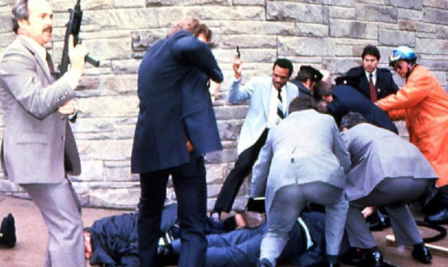
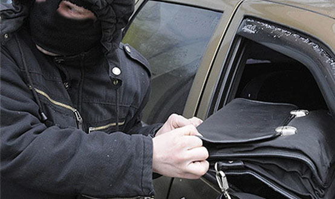

Стадии совершения преступления
Совершение преступления, в большинстве случаев, представляет собой совокупность действий (бездействий), которые могут завершиться достижением противоправного умысла (например, грабитель подстерег жертву в переулке, выхватил у нее сумку и скрылся), а могут быть выявлены или пресечены досрочно (например, вор спланировал совершение квартирной кражи, но был застигнут при вскрытии дверного замка, и был вынужден сбежать). В обоих примерах были совершены противоправные действия, но уровень их общественной опасности различный: в первом случае преступление доведено до конца, во втором – нет, и судить двух преступников по одной мерке нельзя. Для того, чтобы дифференцировать степень общественной опасности оконченных и неоконченных преступлений законодатель ввел понятие стадий совершения преступления.
ЦИТАТА
Под стадиями совершения умышленного преступления следует понимать этапы (периоды, ступени) развития преступления, различающиеся по степени общественной опасности и моменту завершения преступного деяния, отражающие полноту реализации умысла лица совершить конкретное посягательство.
Законодатель в ст.ст. 29, 30 УК РФ закрепил следующие стадии совершения преступления:
1) неоконченное преступление:
- приготовление к преступлению (ч. 2 ст. 29, ч. 1 ст. 30);
- покушение на преступление (ч. 2 ст. 29, ч. 3 ст. 30);
2) оконченное преступление (ч. 1 ст. 29).
Неоконченное преступление отличается от оконченного по двум критериям: объективному (незавершенность деяния) и субъективному (деяние не завершено по причинам, не зависящим от воли виновного).
Неоконченное преступление характеризуется приготовительными действиями (приготовление к преступлению), или неполным выполнением деяния, составляющего объективную сторону конкретного преступления, или ненаступлением преступного последствия (покушение на преступление). В преступлениях, совершаемых по неосторожности, приготовление или покушение невозможны, так как лицо либо без достаточных к тому оснований самонадеянно рассчитывало на предотвращение общественно опасных последствий своих деяний (ч. 2 ст. 26 УК РФ), либо не предвидело возможности наступления общественно опасных последствий своих деяний (ч. 3 ст. 26 УК РФ).
Приготовление к преступлению
Приготовлением к преступлению признаются приискание, изготовление или приспособление лицом средств или орудий совершения преступления, приискание соучастников преступления, сговор на совершение преступления либо иное умышленное создание условий для совершения преступления, если при этом преступление не было доведено до конца по не зависящим от этого лица обстоятельствам.
Специфика приготовления к преступлению заключается в совершении действий (бездействия), которые не входят в объективную сторону оконченного состава конкретного преступления, непосредственно не направлены на осуществление преступления, но обеспечивают для этого реальную возможность, создавая необходимые условия для окончания преступления.
Приготовительные действия выражаются в создании условий для совершения преступления. В уголовном законе специально упоминаются виды создания таких условий:
а) приискание средств и орудий преступления - приобретение их любым способом, как правомерным, так и преступным. Под средствами и орудиями совершения преступления необходимо понимать предметы, которые непосредственно используются исполнителем преступления (например, к средствам для совершения кражи можно отнести лестницу, с помощью которой преступник проник в квартиру). Орудиями, например, при убийстве может быть огнестрельное или холодное оружие;
б) изготовление средств или орудий – их создание любым способом. Например, изготовление ключей для открытия дверного замка с целью совершения кражи;
в) приспособление, в отличие от изготовления, когда средства и орудия создаются заново, заключается в приведении средств и орудий преступления в такое состояние, когда становится возможным их использование при совершении общественно опасного деяния. Например, перепрограммирование брелока автосигнализации для открытия замка автомобиля с целью его угона;
г) приискание соучастников преступления – вовлечение в совершение преступления иных лиц, которые могут выступать в качестве организаторов, исполнителей, пособников или подстрекателей, путем уговоров, угроз и т.п.;
д) сговор на совершение преступления - взаимное соглашение двух или более лиц о совместном участии в совершении преступления.
Также к приготовлению к совершению преступления можно отнести, например, составление плана убийства или плана ограбления банка, создание организованной группы для совершения преступления, отключение сигнализации в помещении, где предполагается совершение кражи, усыпление охранника и др.
Уголовная ответственность наступает за приготовление только к тяжкому и особо тяжкому преступлениям (ч. 2 ст. 30 УК РФ). В соответствии с ч. 2 ст. 66 УК РФ, срок или размер наказания за приготовление к преступлению не может превышать половины максимального срока или размера наиболее строгого вида наказания, предусмотренного соответствующей статьей Особенной части УК РФ за оконченное преступление.
Покушение на преступление
Покушением на преступление признаются умышленные действия (бездействие) лица, непосредственно направленные на совершение преступления, если при этом преступление не было доведено до конца по не зависящим от этого лица обстоятельствам.
В отличие от приготовительных действий, стадия покушения на преступление представляет собой повышенную опасность, поскольку это непосредственное общественно опасное посягательство на объект уголовно-правовой охраны. Приготовление лишь создает условия для совершения преступления в будущем. Осуществление преступных намерений виновного лица воплощается в дальнейших действиях, составляющих последний этап неоконченного преступления, – стадию покушения.
Стадия покушения начинается с момента, когда субъект преступает к выполнению действий (бездействия), непосредственно направленных на совершение преступления (ч. 3 ст. 30 УК РФ), т.е. выполняется объективная сторона конкретного состава преступления. Это значит, что на данной стадии общественно опасное деяние начинает осуществляться практически, в связи с чем объекту уголовно-правовой охраны всегда причиняется вред либо существует прямая угроза его причинения.
Покушение на преступление возможно только с прямым умыслом, т.е. субъект сознает, что совершает общественно опасное действие, образующее объективную сторону задуманного им преступления (например, убийство, изнасилование и др.), и непосредственно направляет их на осуществление этого преступления и достижение преступной цели.
Виды покушений:
1) Оконченное и неоконченное.
Оконченное покушение, в отличие от неоконченного, является более близким к оконченному преступлению и характеризуется тем, что преступник совершил все те действия, которые он считал необходимыми для совершения преступления, но по не зависящим от него обстоятельствам преступление не было доведено до конца. Например, преступник с целью лишения жизни потерпевшего стреляет в него из ружья, но ранит или промахивается. Такое покушение является оконченным, так как виновный сделал все, что считал необходимым для доведения преступления до конца, но преступление оказалось неоконченным по обстоятельствам, не зависящим от него (ранение оказалось не смертельным; виновный не имел навыков в стрельбе).
Неоконченное покушение заключается в том, что преступник по не зависящим от него обстоятельствам не совершает всех действий, которые он считал необходимыми для доведения преступления до конца. Например, преступник с целью лишения жизни потерпевшего прицелился в него из ружья, чтобы выстрелить, но в этот момент был обезоружен сотрудником полиции. Следовательно, субъектом не были совершены все действия, которые по его умыслу были необходимы для доведения преступления до конца. Поэтому неоконченное покушение является менее общественно опасным, чем оконченное покушение, что имеет существенное значение для индивидуализации наказания.
2) Покушение на негодный объект и покушение с негодными средствами.
При покушении на негодный объект действия преступника в силу допускаемой им фактической ошибки в действительности не способны причинить вред объекту уголовно-правовой охраны. Например, преступник проникает в гараж с целью хищения автомобиля, но оказывается, что гараж пуст, а автомобиль уже продан.
Покушение с негодными средствами заключается в том, что преступник применяет средства, которые по своим объективным свойствам не способны довести преступление до конца. Например, преступник приобрел пистолет с целью убийства потерпевшего, но в момент выстрела выяснилось, что пистолет неисправен. Этот вид негодного покушения также влечет уголовную ответственность. Возможны исключения из этого принципа: так, не могут считаться покушением посягательства со средствами, употребляемыми по невежеству (заговоры, колдовство и т.п.0, которые реально не могут принести вреда. С другой стороны, если грабитель использует игрушечный пистолет для ограбления банка, он все равно понесет ответственность: с одной стороны, пистолет не опасен для окружающих, но если это не очевидно для них, то действия лица будут квалифицированы как разбой, будто пистолет был боевым. Согласно ч. 3 ст. 66 УК РФ, срок и размер наказания за покушение не может превышать трех четвертей максимального срока или размера наиболее строгого вида наказания, предусмотренного соответствующей статьей Особенной части Уголовного кодекса за оконченное преступление.
Оконченное преступление
ЦИТАТА
Преступление признается оконченным, если в совершенном лицом деянии содержатся все признаки состава преступления, предусмотренного УК РФ.
Момент окончания преступления зависит от законодательной конструкции его состава, данной в законе. При материальном составе окончание преступления связывается с фактом наступления конкретного последствия, находящегося в причинной связи с общественно опасным деянием (действием или бездействием) лица. При отсутствии преступного результата налицо неоконченная преступная деятельность (покушение на преступление или приготовление к преступлению). Например, убийство является оконченным преступлением при наступлении смерти потерпевшего; если же смерть потерпевшего не наступила, то речь может идти только о покушении на убийство.
При формальном составе преступления считаются оконченными при совершении самого общественно опасного деяния (действия или бездействия). Например, оставление в опасности (ст. 125 УК РФ) будет считаться оконченным преступлением при бездействии виновного, которое выражалось в заведомом оставлении без помощи лица, находящегося в опасном для жизни или здоровья состоянии или лишенного возможности принять меры к самосохранению по малолетству, старости, болезни или вследствие своей беспомощности, в случае, если виновный имел возможность оказать помощь этому лицу и был обязан иметь о нем заботу либо сам подверг его опасности. Следовательно, преступления с формальным составом являются оконченными при совершении самого общественно опасного деяния, предусмотренного уголовно-правовой нормой, независимо от наступления для потерпевшего реальных вредных последствий.
Таким образом, оконченное преступление отличается о неоконченного в основном по объективной стороне: в оконченном преступлении содержатся все элементы объективной стороны конкретного преступления, в неоконченном же отсутствуют общественно опасные последствия или не совершены полностью действия, которые характерны для объективной стороны конкретного преступления.
Преступная деятельность не всегда проходит все три стадии. Значительная часть преступлений совершается без приготовления или покушения, т.е. преступник сразу же достигает своей цели, например, совершает убийство или кражу чужого имущества. Однако если преступление проходит все стадии, то уголовно-правовое значение имеет лишь последняя стадия. Например, вор, застигнутый на месте преступления полицией, будет нести уголовную ответственность не за оконченное преступление (кражу), а за покушение на нее, т.е. по ч. 3 ст. 30 и ст. 158 УК РФ.
Выделение стадий совершения преступления имеет важное практическое значение. Определение стадии совершения преступления позволяет отграничить преступное деяние от непреступного, так как единственным основанием уголовной ответственности является состав преступления. Стадии совершения преступления служат для определения степени общественной опасности деяния и виновного; дифференциации и индивидуализации ответственности и наказания (ст. 66, ч. 2 ст. 69 УК РФ); правильной квалификации преступления: неоконченное преступление квалифицируется по соответствующей статье Особенной части УК РФ со ссылкой на ч. 1 ст. 30 УК РФ (приготовление) или на ч. 3 ст. 30 УК РФ (покушение); решения вопроса об освобождении от уголовной ответственности (ч. 2 ст. 30, ст. 31 УК РФ) и наказания.
Добровольный отказ от преступления
Уголовное законодательство предусматривает ситуации, когда лицо, намеренное совершить преступление, отказывается от его совершения в силу различных причин. В таком случае законодатель дает возможность этому лицу избежать уголовной ответственности: потенциальный преступник должен понимать, что совершение им преступления не является неотвратимым, и что он может избежать наказания, если откажется от исполнения преступного замысла.
ЦИТАТА
Добровольным отказом от преступления признается прекращение лицом приготовления к преступлению либо прекращение действий (бездействия), непосредственно направленных на совершение преступления, если лицо осознавало возможность доведения преступления до конца.
Для освобождения лица от уголовной ответственности по факту добровольного отказа от преступления необходимо соблюдение следующих условий:
1) лицо отказалось от преступного замысла или не довело начатое преступление до конца;
2) лицо имело возможность доведения преступления до конца;
3) в действиях лица отсутствуют признаки иного состава преступления (например, лицо приобрело оружие для осуществления ограбления. В случае добровольного отказа лицо не будет нести ответственность за ограбление, но понесет ответственность за незаконное приобретение оружия);
4) добровольность отказа (например, добровольный отказ отсутствует, если вор не смог вскрыть замок сейфа и скрылся, здесь налицо покушение на кражу – вор отказался от совершения преступления вынужденно, а не добровольно);
5) окончательность отказа (добровольным отказом не считается, например, перенос времени совершения преступления, чтобы более тщательно подготовиться).
Добровольный отказ следует отличать от деятельного раскаяния:
а) добровольный отказ возможен только до окончания преступления, а деятельное раскаяние – после его окончания;
б) деятельное раскаяние – это активная деятельность, направленная на предотвращение вреда и т.п.; добровольный отказ проявляется в воздержании от преступных действий либо в ненаступлении противоправных последствий;
в) добровольный отказ исключает уголовную ответственность (ч. 2 ст. 31 УК РФ); деятельное раскаяние является лишь обстоятельством, смягчающим уголовную ответственность (п. «и» ч. 1 ст. 61 УК РФ).